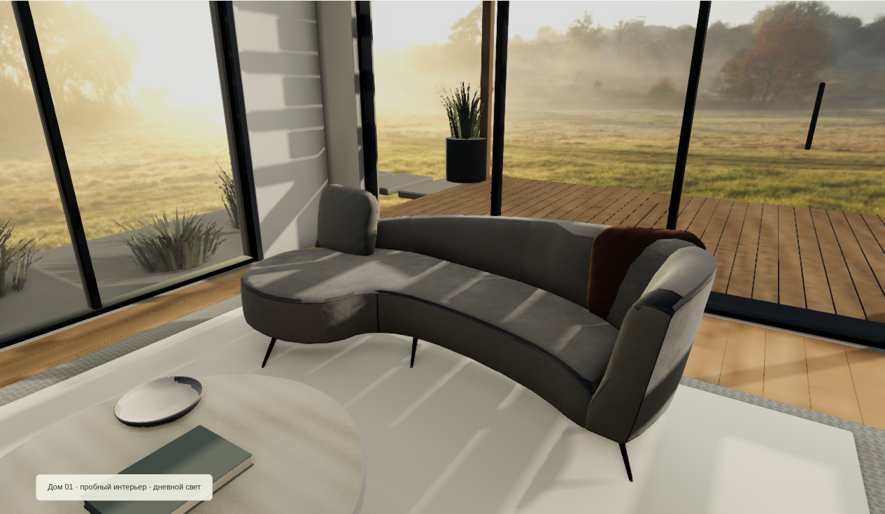

СтройКаДОМ 01 · ГОСТИНАЯОдин ракурс. Две версии.Настоящие кадры из браузера. Та же геометрия, камера и материалы. Изменены поверхности материалов.Было · v29 — переснято с той же позиции камерыСтало · v30 — ковёр, микрорельеф дерева и поверхность камня